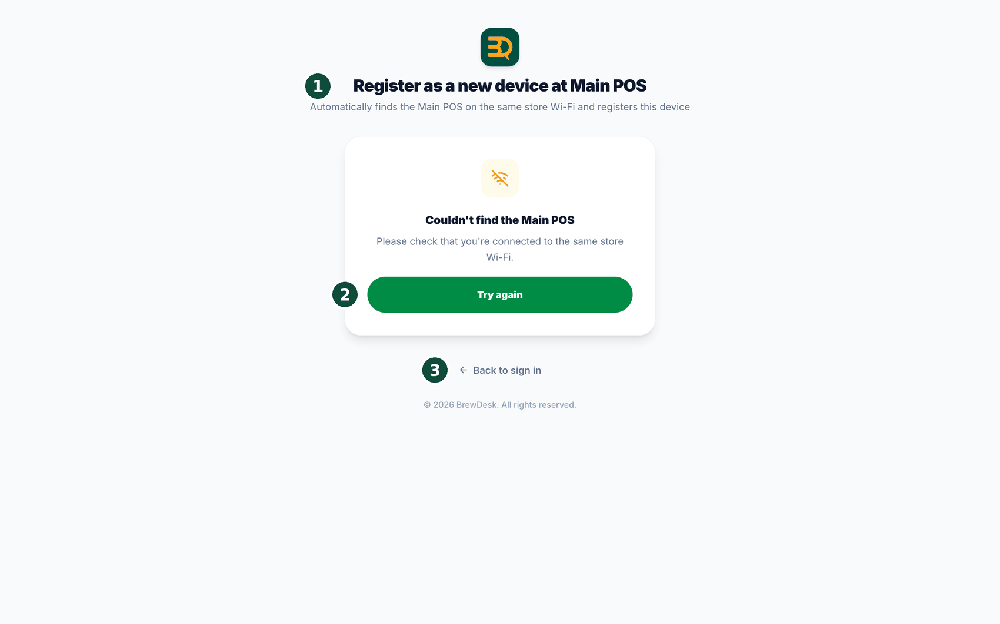
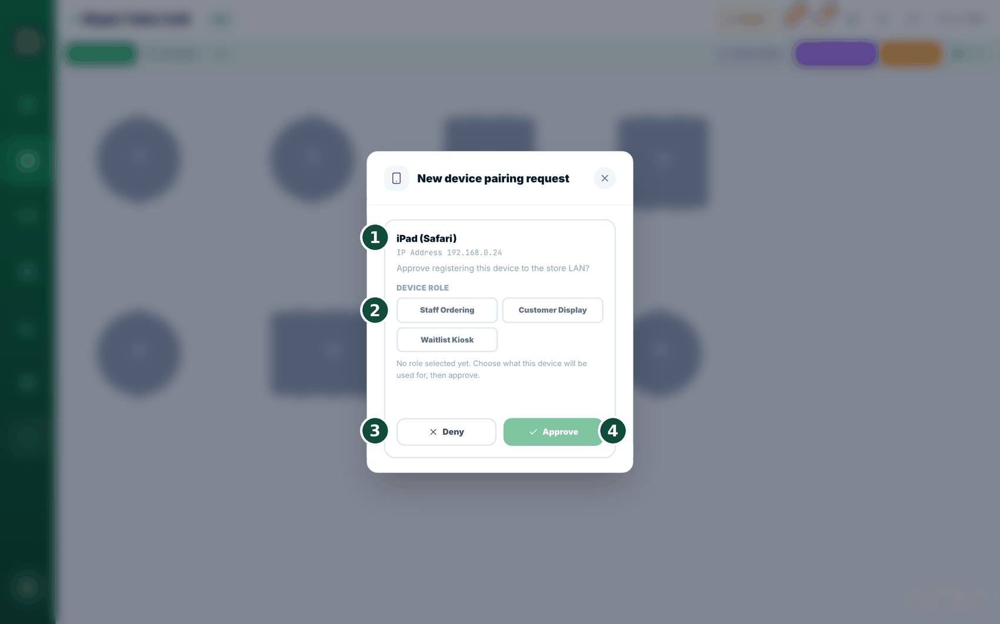

23Varios dispositivos y fiabilidad
Puede usar más de un dispositivo al mismo tiempo. Si uno se avería, otro mantiene abierta su tienda. Configuremos sus dispositivos.

- Inicie sesión con el correo del propietario en los dispositivos que serán su caja principal y sus cajas adicionales. Las tabletas de pedidos del personal, las pantallas para clientes y los quioscos de lista de espera no usan el inicio de sesión con el correo del propietario: se aprueban en la caja principal (Agregar un dispositivo a la caja principal).
- Asigne una función a cada dispositivo. Elija caja principal (su dispositivo número uno), caja adicional (un dispositivo de apoyo), Staff Ordering (Pedidos del Personal), pantalla para clientes (una pantalla para los clientes) o quiosco de lista de espera.
- ¿Necesita cambiar más tarde la función de un dispositivo? Pida el cambio en ese dispositivo y apruébelo en la caja principal (Cambiar la función de un dispositivo y comprobar la conexión).
- Usted elige un dispositivo como caja principal: es su ancla. No cede su función por sí sola. Si alguna vez se queda sin conexión, BrewDesk le avisa de inmediato para que pueda volver a encenderla o convertir otro dispositivo en la caja principal.
- Consulte Modos de dispositivo y pantalla para clientes para configurar el modo de un dispositivo, incluido Staff Ordering.
Settings › Devices, toque el nombre de un dispositivo (o el pequeño lápiz al lado), escriba algo como "Mostrador 1" o "iPad de la barra" y guarde. Verá "Device name updated.". El nombre aparece en todos los dispositivos, así que siempre sabe qué tableta es cuál. Las cajas que se conectan solo por la red de la tienda no se pueden renombrar.Su caja nunca se detiene. ¿Se le derramó una bebida encima? Tome cualquier computadora portátil o tableta y vuelve a funcionar en minutos. Sin máquinas especiales y sin quedar atado a nada.
Agregar un dispositivo a la caja principal
Cuando agrega una tableta de pedidos del personal, una pantalla para clientes o una pantalla de quiosco de lista de espera (registro propio), su caja principal la encuentra por usted. No hay código que escribir ni ajuste que buscar. Incluso funciona cuando la tienda no tiene internet.
El nuevo dispositivo debe tener instalada la app de BrewDesk (iPad o escritorio; la app de Android todavía no está disponible) y debe estar en el mismo Wi-Fi de la tienda que su caja principal. Una página abierta en un navegador web no se puede registrar como dispositivo; en su lugar verá "Add devices from the BrewDesk app".


- Abra la app de BrewDesk en el nuevo dispositivo. En la pantalla de inicio de sesión, toque "Register as a new device at Main POS.". Si el dispositivo no tiene internet, va solo a esta pantalla.
- Verá "Looking for Main POS..." y luego la solicitud se envía automáticamente. No hay nada más que tocar en el nuevo dispositivo: déjelo en "Waiting for approval at the Main POS.".
- En su caja principal aparece sola una ventana llamada New device pairing request. Muestra qué dispositivo lo pidió, con su nombre y dirección.
- En Device role (Rol del dispositivo), elija para qué es este dispositivo: Staff Ordering (Pedidos del Personal), Customer Display (Pantalla para clientes) o Waitlist Kiosk (registro propio). El botón de aprobar sigue desactivado hasta que elija uno.
- Toque Approve. Si no reconoce el dispositivo, toque Deny.
- El nuevo dispositivo muestra New device registration complete y pasa directamente a la función que le asignó.
En la caja principal, Settings › Devices ahora muestra una guía How to add a device en lugar de botones de registro: el registro siempre empieza en el nuevo dispositivo.
Cambiar la función de un dispositivo y comprobar la conexión
Puede cambiar lo que hace un dispositivo ya vinculado, o comprobar si sigue comunicándose con su caja principal.
- En un dispositivo de pedidos del personal, toque el ícono del modo del dispositivo ("Switch device mode") en la parte superior de la pantalla.
- Se abre Change device role. No necesita un código otra vez: este dispositivo ya está registrado.
- Elija la nueva función: Staff Ordering (tomar pedidos desde cualquier dispositivo), Customer Display (mostrar los pedidos a los clientes) o Waitlist Kiosk (registro propio en la lista de espera).
- Todavía no cambia nada en la tableta. Dice "Waiting for Main POS approval": "Ask the owner to approve this change on the Main POS screen. Nothing has changed on this device yet."
- Vaya a su caja principal. Aparece sola una tarjeta con la etiqueta "Role change — existing device": "This device is already registered and is asking to change its role. Approving changes what it does; its login is not affected.". Toque Approve, o Deny si no lo esperaba. Entonces la tableta cambia.
- En la parte superior de esa ventana verá el estado de la conexión. Connected to the main POS significa que todo está bien. No main POS connected significa que todavía no la ha encontrado; toque Check again (Consultar de nuevo).
- Para quitar este dispositivo por completo, toque Log out & unregister en la parte inferior. Vuelve a la pantalla de inicio de sesión y, después de volver a iniciar sesión, puede elegir su función desde cero.
Usar una tableta Android para pedidos en mesa, pedidos del personal o una pantalla para clientes (próximamente)
Así se usa una tableta Android en su tienda para pedidos en mesa, pedidos del personal o una pantalla para clientes. La app de Android todavía no está en Google Play. Por ahora, su instalador le instala la app en la tableta; la publicación en Google Play llegará pronto.
(1) Una tableta Android (Android 7.0 o posterior). (2) La caja principal encendida y con conexión. (3) La tableta y la caja principal en el mismo Wi-Fi de la tienda. Si puede, conecte la caja principal al router con un cable LAN, y compruebe de antemano que la señal Wi-Fi sea suficiente donde están sus mesas.
- Instalar la app. Su instalador instala la app de BrewDesk en la tableta. La instalación desde Google Play llegará pronto.
- Encontrar la caja principal. Abra la app en la tableta y toque Register as a new device at Main POS (Registrar como nuevo dispositivo en el POS principal). Muestra Looking for Main POS... y envía la solicitud automáticamente en cuanto la encuentra.
- Comprobar el nombre de la tienda. Si la tableta tiene una sesión iniciada en una tienda, muestra Looking for the Main POS of (store) y luego Found: (store). Compruebe que sea su tienda. Si encuentra la caja principal de otra tienda, se detiene con This Main POS belongs to another store. Compruebe que esté en el Wi-Fi correcto de la tienda y toque Try again (Reintentar).
- Aprobar en la caja principal. La tableta muestra Waiting for approval at the Main POS con el tiempo restante. Cuando aparezca la ventana New device pairing request en la caja principal, elija el Device role (Rol del dispositivo) y toque Approve (consulte Agregar un dispositivo a la caja principal). La tableta muestra entonces New device registration complete.
- Si cerró o no vio la ventana. En la parte superior de la caja principal queda un aviso (N) device(s) waiting for approval. Toque Review (Revisar) para volver a abrir la ventana de aprobación. Si la solicitud desapareció, toque Send request again en la tableta.
Registrar varias tabletas a la vez
Si enciende varias tabletas y envía una solicitud desde cada una, las solicitudes se ponen en cola en la caja principal. Una tienda puede tener hasta 32 solicitudes en espera (se aplica después de la actualización de la caja principal · próximamente). Solicitar y aprobar una tableta a la vez es la forma más segura. Cada tableta recibe su propia función, así que compruebe el nombre del dispositivo al aprobar.
La tableta queda fijada en la pantalla de la tienda
Después de que su instalador la configure, la tableta abre sola la app de BrewDesk al reiniciarse, y los botones de Inicio y Recientes no permiten ir a otra app. Los clientes no pueden abrir otras apps. En algunas tabletas aparece una vez, después de cada reinicio, el aviso App is pinned; toque Got it. No aparece en las tabletas registradas con bloqueo total.
- Couldn't find the Main POS — asegúrese de que la tableta no esté en el Wi-Fi de invitados ni en un punto de acceso del teléfono. Conéctela al mismo Wi-Fi de la tienda que la caja principal, asegúrese de que la app de la caja principal esté abierta y toque Try again (Reintentar).
- No aparece la ventana de aprobación — busque el aviso (N) device(s) waiting for approval en la caja principal. Si no está, toque Send request again en la tableta. Una solicitud puede perderse si la caja principal se estaba actualizando o se acaba de reiniciar. Las solicitudes caducan a los 2 minutos; si ve Request expired, vuelva a intentarlo.
- Couldn't complete registration (No se pudo completar el registro) — empiece de nuevo desde el principio.
- Wi-Fi débil — si la conexión se corta o es lenta cerca de las mesas, acerque el router o agregue un punto de acceso. Avise a su instalador o distribuidor.
- Solo una tableta nunca se conecta — es posible que el antivirus de la computadora de la caja principal esté bloqueando esa tableta. Contacte con su instalador o distribuidor.
Cuando llega al límite de dispositivos
Su plan incluye un número determinado de cajas y pantallas para clientes. Cuando llega a ese número, BrewDesk no se limita a rechazarlo: le ofrece cambiar directamente un dispositivo por otro.
Settings › Devices muestra una franja de advertencia en la parte superior en cuanto llega al límite (no solo cuando lo supera), con el recuento de lo que usa; por ejemplo, POS 1/1 y Customer display 1/1 en Pro, o POS 3/3 y Customer display 3/3 en Business. Cada dispositivo también muestra Last seen, para que sepa cuál ha estado guardado en un cajón.
- Registre la nueva caja como siempre. Si está en el límite, verá "You've reached your plan's device limit. Replace an existing device, or upgrade your plan to add more."
- Se abre un selector Replace a device (Reemplazar un dispositivo) con los dispositivos que podría retirar. Elija uno.
- Eso es todo: el dispositivo anterior se desconecta y el nuevo ocupa su lugar en el acto.
- ¿No cambió nada en esa lista desde hace un rato? Si el dispositivo que eligió ya estaba desconectado, verá "That device was already disconnected, or this list is out of date — refreshing the list.". Vuelva a elegir de la lista actualizada.
En un iPad o en la app de escritorio el texto es un poco más corto y lo remite a su cuenta de BrewDesk en la web para cambiar de plan; el cambio en sí funciona exactamente igual.
¿Necesita más ayuda?
Puede enviar un ticket de soporte desde la app en Settings › Support.